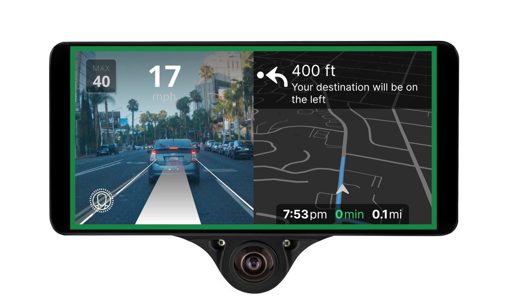

This page highlights the projects I have worked on, both personal and academic.

The Problem of E-waste
This paper is a highlight of my technical writing capabilities. It surveys the current rising issues of E-waste throughout the world, and highlights ways we could mitigate this issue in the future. This paper was completed as the final project for Washington University in St. Louis's Technical Writing course.
An Exploration of Data Remanence
This project explores the concept of data remanence, the idea that deleted information remains on storage devices in spite of standard deletion. I scanned various storage devices including hard drives, USB drives, and SD cards using Autopsy. I also researched the current policies regarding electronic recycling and how these policies address data remanence. This project was completed as the final project for Washington University in St. Louis's Computer Security course.

Safety of Autonomous Vehicles
This project project was about robustnuss testing in autonomous vehicles (AVs), looking at rare, off-nominal scenarios for the AV software OpenPilot. I researched how to define the safety of autonomous vehicles, and how to change and monitor the logs of OpenPilot to cause and detect unsafe behaviors. This project was worked on as a part of Carnegie Mellon University's REUSE program, under the mentorship of Drs. Claire LeGoues and Chris Timerpley.

Algorithms for Infant Mobility
This project researches adaptive behaivior trees for the assitive robot the GoBot.